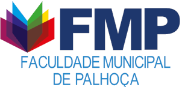

VOLTAR PARA PAGINA 2
SEJA BEM VINDO A ULTIMA PAGINA

A Faculdade Municipal de Palhoça – Educadora Marileia Silveira da Costa, FMP, foi fundada em 25 de outubro de 2005 e inaugurada em 20 de abril de 2006, A lei Municipal que deu origem a instituição foi a lei nº 2.182. A partir desta gestão, foi decidido que 90% das vagas oferecidas seriam destinadas aos alunos oriundos de escolas públicas, que residam no município de Palhoça e região.
Atualmente a FMP está instalada na Rua João Pereira dos Santos, nº 99, bairro Ponte do Imaruim, Palhoça/SC. Sendo responsável pela administração da Faculdade o Profº Débora Raquel Schutz, ocupando o cargo de Diretor Executivo. A FMP possui 5 cursos de graduação, Administração, Pedagogia, Gestão de Turismo*, Analise e Desenvolvimento de Sistemas e Processos Gerenciais.
ACESSE A PAGINA OFICIAL AQUI!